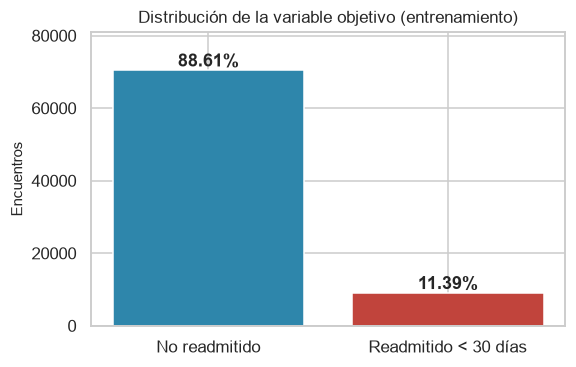
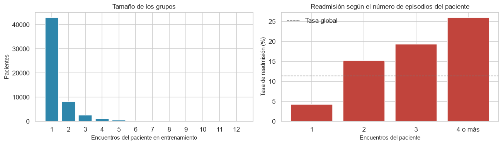
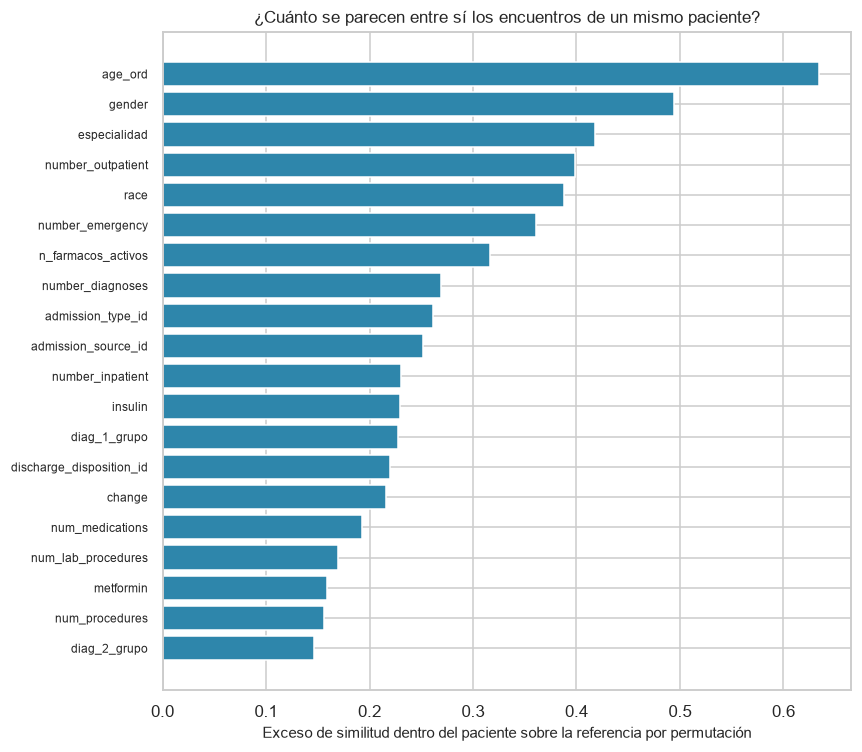
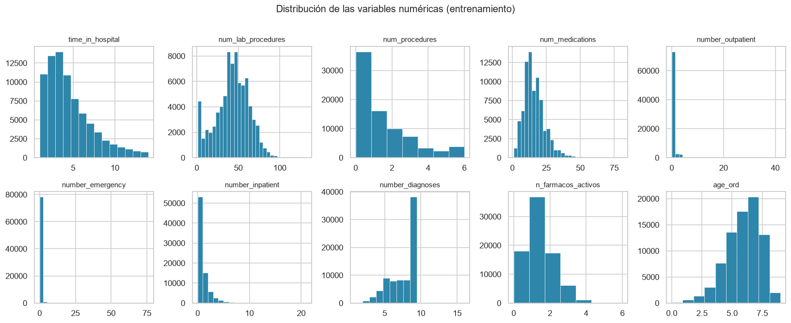
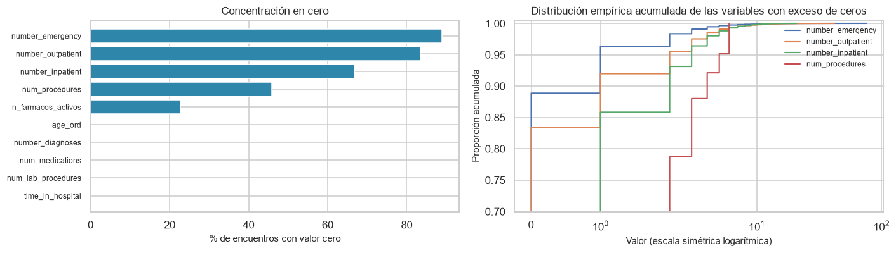
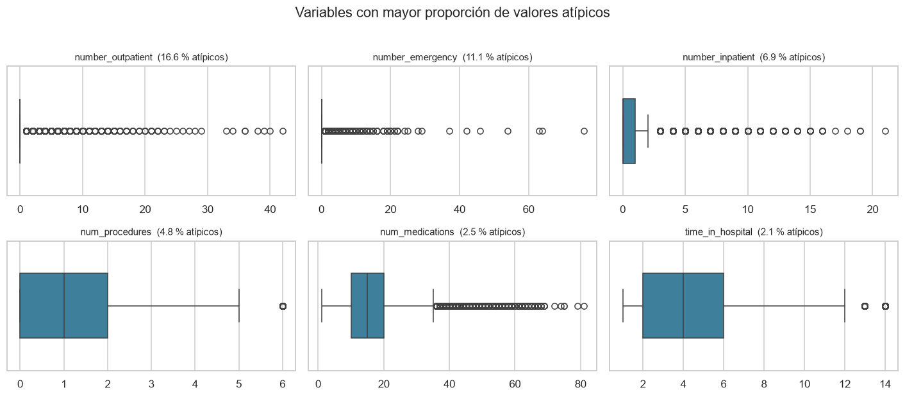
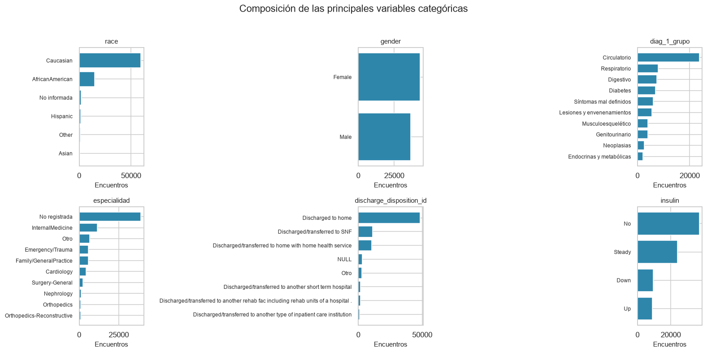
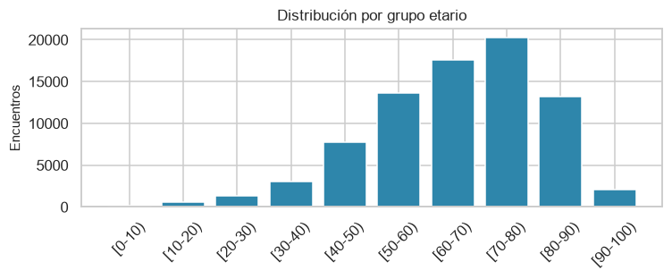

3. Análisis univariado#
Este capítulo caracteriza cada variable por separado: la distribución de la variable objetivo, la estructura de dependencia entre observaciones, la forma y dispersión de las numéricas y la composición de las categóricas.
Tres reglas gobiernan todo lo que sigue.
Solo se usa el conjunto de entrenamiento. El conjunto de prueba permanece intacto hasta la evaluación final, para que ninguna decisión se haya tomado mirándolo.
La unidad de análisis es el encuentro, no el paciente. El capítulo 2 adoptó la cohorte completa de episodios en lugar de quedarse con uno por paciente, porque cualquier selección de un episodio introduce sesgo. La contrapartida es que las filas no son independientes: un mismo paciente aporta varias. La sección 3.2 cuantifica ese efecto, porque condiciona la lectura de todos los contrastes del capítulo 4.
Las cifras del texto se generan desde el código. Cada número citado en la narración proviene de una celda ejecutada, no de una transcripción manual. Así la prosa no puede quedar desfasada respecto a los datos si el ETL cambia.
from config import *
try:
from myst_nb import glue as _glue
except ImportError: # el notebook sigue siendo ejecutable fuera de Jupyter Book
def _glue(clave, valor, display=False):
return None
def anotar(clave, valor):
"""Publica un valor para poder citarlo en el texto del capítulo.
Las celdas de texto lo recuperan con el rol ``{glue:text}``. Atar las
cifras de la narración al código evita el modo de fallo más común de un
análisis exploratorio escrito a mano: que el texto siga afirmando los
resultados de una versión anterior del conjunto de datos.
Parameters
----------
clave : str
Identificador con el que se cita el valor en las celdas de texto.
valor : str or float
Valor a publicar; se convierte a cadena.
Returns
-------
str or float
El mismo valor recibido, para poder encadenar la llamada.
"""
_glue(clave, str(valor), display=False)
return valor
roles = roles_variables()
OBJETIVO = roles["objetivo"]
IDENTIFICADOR = roles["identificador"]
NUMERICAS = roles["numericas"] + roles["ordinales"]
CATEGORICAS = roles["categoricas"]
BINARIAS = roles["binarias"]
ETIQUETAS_EDAD = {int(k): v for k, v in roles["etiquetas_edad"].items()}
train = leer_tabla("diabetes_train")
assert train.isna().sum().sum() == 0, "El conjunto cargado tiene faltantes"
anotar("c3_encuentros", f"{len(train):,}")
anotar("c3_pacientes", f"{train[IDENTIFICADOR].nunique():,}")
anotar("c3_predictores", len(NUMERICAS) + len(CATEGORICAS) + len(BINARIAS))
anotar("c3_n_numericas", len(NUMERICAS))
print(f"Entrenamiento : {len(train):,} encuentros de "
f"{train[IDENTIFICADOR].nunique():,} pacientes")
print(f"Predictores : {len(NUMERICAS)} numéricas y ordinales, "
f"{len(BINARIAS)} binaria, {len(CATEGORICAS)} categóricas")
Entrenamiento : 79,473 encuentros de 56,036 pacientes
Predictores : 10 numéricas y ordinales, 1 binaria, 27 categóricas
El conjunto de entrenamiento reúne 79,473 encuentros de 56,036 pacientes, con 38 predictores.
3.1. Variable objetivo#
El grado de desbalance determina las métricas de evaluación y justifica que el balanceo de clases sea una dimensión experimental del pipeline y no un paso obligatorio.
conteo = train[OBJETIVO].value_counts().sort_index()
proporcion = train[OBJETIVO].value_counts(normalize=True).sort_index()
razon = conteo[0] / conteo[1]
# Prevalencia por paciente: un paciente cuenta como positivo si al menos uno
# de sus encuentros terminó en readmisión temprana. Es una cantidad distinta
# de la prevalencia por encuentro y conviene no confundirlas.
por_paciente = train.groupby(IDENTIFICADOR)[OBJETIVO].max()
fig, ax = plt.subplots(figsize=(5.4, 3.5))
barras = ax.bar(["No readmitido", "Readmitido < 30 días"], conteo.values,
color=COLORES)
for barra, p in zip(barras, proporcion.values):
ax.text(barra.get_x() + barra.get_width() / 2, barra.get_height(),
f"{p:.2%}", ha="center", va="bottom", fontweight="bold")
ax.set_ylabel("Encuentros")
ax.set_title("Distribución de la variable objetivo (entrenamiento)")
ax.set_ylim(0, conteo.max() * 1.15)
plt.tight_layout()
plt.show()
anotar("c3_prevalencia", f"{100 * proporcion[1]:.2f}")
anotar("c3_razon", f"{razon:.1f}")
anotar("c3_prev_paciente", f"{100 * por_paciente.mean():.2f}")
print(f"Clase positiva por encuentro : {conteo[1]:,} de {len(train):,} "
f"({proporcion[1]:.2%})")
print(f"Clase positiva por paciente : {por_paciente.sum():,} de "
f"{len(por_paciente):,} ({por_paciente.mean():.2%})")
print(f"Razón de desbalance : 1 a {razon:.1f}")

Clase positiva por encuentro : 9,051 de 79,473 (11.39%)
Clase positiva por paciente : 7,035 de 56,036 (12.55%)
Razón de desbalance : 1 a 7.8
La clase positiva representa el 11.39 % de los encuentros de entrenamiento, una razón de 1 a 7.8. Medido por paciente, el 12.55 % tuvo al menos una readmisión temprana; la diferencia entre ambas cifras es la primera señal de que los episodios se concentran en una parte de la cohorte.
Dos consecuencias metodológicas:
La exactitud queda descartada como métrica principal. Un clasificador trivial que prediga siempre “no readmitido” alcanza cerca del 89 % de exactitud con capacidad predictiva nula. Las métricas apropiadas son el AUC-ROC, el AUC de precisión-exhaustividad (más informativo que el ROC cuando la clase positiva es escasa, porque la precisión sí es sensible a la prevalencia), el F1 de la clase positiva y la exactitud balanceada.
El balanceo se justifica empíricamente, no por convención. Comparar SMOTE, ADASYN, ponderación por clase y ausencia de tratamiento es una pregunta legítima con esta razón de desbalance, y la ausencia de tratamiento debe formar parte de la comparación en lugar de darse por descartada.
3.2. Estructura de dependencia entre encuentros#
Esta sección no existía en la primera entrega y es la consecuencia directa de haber adoptado la cohorte completa de episodios. Si un mismo paciente aporta varias filas, las observaciones están agrupadas y hay que responder dos preguntas antes de seguir.
¿Cuánta información nueva aporta cada fila? Los contrastes del capítulo 4 suponen independencia. Con datos agrupados el número de observaciones que aportan información nueva es menor que el número de filas y los valores p salen artificialmente pequeños. Se cuantifica con el efecto de diseño, estimado aquí sin supuestos mediante un bootstrap por paciente: se compara el error estándar de la prevalencia cuando se remuestrean pacientes completos con el que tendría bajo muestreo independiente de filas. El cociente al cuadrado es el efecto de diseño y
n / deffes el tamaño de muestra efectivo.¿Se parecen entre sí los encuentros de un mismo paciente? Esta es la pregunta que decide el esquema de validación cruzada. Se mide variable por variable y se contrasta contra una referencia por permutación: se rompe al azar la correspondencia entre filas y pacientes y se recalcula la misma medida. La diferencia entre el valor observado y el permutado es la similitud atribuible a la identidad del paciente, ya descontado el sesgo que introducen los grupos pequeños.
frecuencia = train[IDENTIFICADOR].value_counts()
codigo_paciente = train[IDENTIFICADOR].astype("category").cat.codes.to_numpy()
tamano_grupo = np.bincount(codigo_paciente).astype(float)
positivos_grupo = np.bincount(codigo_paciente,
weights=train[OBJETIVO].to_numpy().astype(float))
# Los pacientes con un solo encuentro no aportan pares, así que todo lo que
# tenga que ver con la similitud entre encuentros se mide sobre el subconjunto
# de pacientes con episodios repetidos. Su prevalencia es distinta de la
# global, y esa es justamente la referencia contra la que hay que comparar.
repetidos = train[train[IDENTIFICADOR].map(frecuencia) > 1].reset_index(drop=True)
codigo_repetidos = repetidos[IDENTIFICADOR].astype("category").cat.codes.to_numpy()
tamanos_repetidos = np.bincount(codigo_repetidos).astype(float)
pares_repetidos = (tamanos_repetidos * (tamanos_repetidos - 1)).sum()
# --- 1. Efecto de diseño por bootstrap de pacientes ----------------------
REPETICIONES = 2000
generador = np.random.default_rng(RANDOM_STATE)
sorteo = generador.integers(0, len(tamano_grupo),
size=(REPETICIONES, len(tamano_grupo)))
prevalencias = (positivos_grupo[sorteo].sum(axis=1)
/ tamano_grupo[sorteo].sum(axis=1))
prevalencia = train[OBJETIVO].mean()
ee_agrupado = prevalencias.std(ddof=1)
ee_independiente = np.sqrt(prevalencia * (1 - prevalencia) / len(train))
deff = (ee_agrupado / ee_independiente) ** 2
n_efectivo = len(train) / deff
# --- 2. ¿Predice la etiqueta de un encuentro la de otro del mismo paciente?
def concordancia_positiva(objetivo):
"""Probabilidad de readmisión dado que otro encuentro del paciente lo fue.
Se calcula sobre todos los pares ordenados de encuentros del mismo
paciente. El denominador cuenta los pares cuyo primer elemento es
positivo, de modo que el resultado es directamente comparable con la
prevalencia del subconjunto: bajo independencia ambas coinciden.
"""
positivos = np.bincount(codigo_repetidos, weights=objetivo)
return ((positivos * (positivos - 1)).sum()
/ (positivos * (tamanos_repetidos - 1)).sum())
objetivo_repetidos = repetidos[OBJETIVO].to_numpy().astype(float)
observada = concordancia_positiva(objetivo_repetidos)
nula = np.mean([concordancia_positiva(generador.permutation(objetivo_repetidos))
for _ in range(30)])
por_encuentros = pd.DataFrame({
"pacientes": [(frecuencia == 1).sum(), (frecuencia == 2).sum(),
(frecuencia == 3).sum(), (frecuencia >= 4).sum()],
}, index=["1", "2", "3", "4 o más"])
grupo = train[IDENTIFICADOR].map(frecuencia).clip(upper=4)
agregado = train.groupby(grupo)[OBJETIVO].agg(["size", "mean"])
por_encuentros["encuentros"] = agregado["size"].to_numpy()
por_encuentros["% de encuentros"] = (
100 * por_encuentros["encuentros"] / len(train)).round(2)
por_encuentros["tasa de readmisión (%)"] = (100 * agregado["mean"]).to_numpy()
fig, axes = plt.subplots(1, 2, figsize=(12, 3.6))
distribucion = frecuencia.value_counts().sort_index()
axes[0].bar(distribucion.index[:12].astype(str), distribucion.values[:12],
color=PALETA[0])
axes[0].set_xlabel("Encuentros del paciente en entrenamiento")
axes[0].set_ylabel("Pacientes")
axes[0].set_title("Tamaño de los grupos")
axes[1].bar(por_encuentros.index, por_encuentros["tasa de readmisión (%)"],
color=PALETA[1])
axes[1].axhline(100 * prevalencia, ls="--", color=GRIS, lw=1,
label="Tasa global")
axes[1].set_ylabel("Tasa de readmisión (%)")
axes[1].set_xlabel("Encuentros del paciente")
axes[1].set_title("Readmisión según el número de episodios del paciente")
axes[1].legend()
plt.tight_layout()
plt.show()
anotar("c3_m_media", f"{len(train) / len(frecuencia):.2f}")
anotar("c3_deff", f"{deff:.2f}")
anotar("c3_nefectivo", f"{n_efectivo:,.0f}")
anotar("c3_un_encuentro", f"{100 * (frecuencia == 1).mean():.1f}")
anotar("c3_max_encuentros", int(frecuencia.max()))
anotar("c3_concordancia_obs", f"{100 * observada:.1f}")
anotar("c3_concordancia_nula", f"{100 * nula:.1f}")
print(f"Encuentros por paciente : media {len(train) / len(frecuencia):.2f}, "
f"máximo {int(frecuencia.max())}")
print(f"Error estándar de la prevalencia")
print(f" bajo muestreo independiente de filas : {ee_independiente:.5f}")
print(f" bajo remuestreo de pacientes : {ee_agrupado:.5f}")
print(f"Efecto de diseño : {deff:.3f}")
print(f"Tamaño muestral efectivo: {n_efectivo:,.0f} de {len(train):,} filas")
print(f"\nPacientes con episodios repetidos: {len(tamanos_repetidos):,} "
f"({len(repetidos):,} encuentros, prevalencia "
f"{objetivo_repetidos.mean():.3f})")
print("P(readmisión | otro encuentro del mismo paciente fue readmitido)")
print(f" observada : {observada:.3f}")
print(f" permutada : {nula:.3f}")
tabla(por_encuentros.round(2), filas=10,
titulo="Readmisión temprana según el número de episodios del paciente")

Encuentros por paciente : media 1.42, máximo 40
Error estándar de la prevalencia
bajo muestreo independiente de filas : 0.00113
bajo remuestreo de pacientes : 0.00133
Efecto de diseño : 1.395
Tamaño muestral efectivo: 56,974 de 79,473 filas
Pacientes con episodios repetidos: 13,077 (36,514 encuentros, prevalencia 0.197)
P(readmisión | otro encuentro del mismo paciente fue readmitido)
observada : 0.317
permutada : 0.197
Readmisión temprana según el número de episodios del paciente
| Loading ITables v2.9.1 from the internet... (need help?) |
| ⓘ | pacientes | encuentros | % de encuentros | tasa de readmisión (%) |
|---|---|---|---|---|
| 1 | 42959 | 42959 | 54.05 | 4.29 |
| 2 | 8199 | 16398 | 20.63 | 15.22 |
| 3 | 2591 | 7773 | 9.78 | 19.34 |
| 4 o más | 2287 | 12343 | 15.53 | 25.98 |
def eta_cuadrado(valores):
"""Fracción de la varianza de una variable explicada por el paciente."""
valores = np.asarray(valores, dtype=float)
suma = np.bincount(codigo_repetidos, weights=valores)
medias = (suma / np.bincount(codigo_repetidos))[codigo_repetidos]
return 1 - ((valores - medias) ** 2).sum() / (
(valores - valores.mean()) ** 2).sum()
def concordancia(valores):
"""Probabilidad de que dos encuentros del mismo paciente coincidan.
Se define sobre los pares ordenados de encuentros dentro de cada paciente
y se calcula contando las coincidencias por celda (paciente, categoría),
lo que evita recorrer los grupos uno a uno.
"""
niveles = pd.Series(valores).astype("category").cat.codes.to_numpy()
combinado = codigo_repetidos.astype(np.int64) * (niveles.max() + 1) + niveles
conteos = np.bincount(combinado).astype(float)
return ((conteos ** 2).sum() - len(niveles)) / pares_repetidos
PERMUTACIONES = 5
filas = []
for columna in NUMERICAS + BINARIAS + [OBJETIVO]:
valores = repetidos[columna].to_numpy()
filas.append({
"variable": columna, "medida": "varianza explicada (η²)",
"observado": eta_cuadrado(valores),
"permutado": np.mean([eta_cuadrado(generador.permutation(valores))
for _ in range(PERMUTACIONES)]),
})
for columna in CATEGORICAS:
valores = repetidos[columna].to_numpy()
filas.append({
"variable": columna, "medida": "concordancia",
"observado": concordancia(valores),
"permutado": np.mean([concordancia(generador.permutation(valores))
for _ in range(PERMUTACIONES)]),
})
similitud = pd.DataFrame(filas).set_index("variable")
similitud["exceso"] = similitud["observado"] - similitud["permutado"]
similitud = similitud.sort_values("exceso", ascending=False)
fig, ax = plt.subplots(figsize=(8, 7))
orden = similitud.head(20).iloc[::-1]
ax.barh(orden.index, orden["exceso"], color=PALETA[0])
ax.set_xlabel("Exceso de similitud dentro del paciente sobre la referencia "
"por permutación")
ax.set_title("¿Cuánto se parecen entre sí los encuentros de un mismo paciente?")
ax.tick_params(axis="y", labelsize=8)
plt.tight_layout()
plt.show()
guardar_resultado(similitud, "similitud_intrapaciente")
anotar("c3_exceso_max", f"{similitud['exceso'].max():.2f}")
anotar("c3_var_max", similitud.index[0])
anotar("c3_exceso_objetivo", f"{similitud.loc[OBJETIVO, 'exceso']:+.3f}")
tabla(similitud.round(3), filas=40,
titulo="Similitud entre encuentros del mismo paciente, frente a su "
"referencia por permutación")

Similitud entre encuentros del mismo paciente, frente a su referencia por permutación
| Loading ITables v2.9.1 from the internet... (need help?) |
| ⓘ | medida | observado | permutado | exceso |
|---|---|---|---|---|
| variable | ||||
| age_ord | varianza explicada (η²) | 0.990 | 0.356 | 0.634 |
| gender | concordancia | 1.000 | 0.505 | 0.495 |
| especialidad | concordancia | 0.714 | 0.297 | 0.417 |
| number_outpatient | varianza explicada (η²) | 0.755 | 0.356 | 0.398 |
| race | concordancia | 0.991 | 0.604 | 0.387 |
| number_emergency | varianza explicada (η²) | 0.728 | 0.367 | 0.361 |
| n_farmacos_activos | varianza explicada (η²) | 0.674 | 0.357 | 0.316 |
| number_diagnoses | varianza explicada (η²) | 0.626 | 0.357 | 0.269 |
| admission_type_id | concordancia | 0.640 | 0.378 | 0.261 |
| admission_source_id | concordancia | 0.701 | 0.449 | 0.252 |
| number_inpatient | varianza explicada (η²) | 0.590 | 0.360 | 0.231 |
| insulin | concordancia | 0.538 | 0.308 | 0.229 |
| diag_1_grupo | concordancia | 0.360 | 0.133 | 0.227 |
| discharge_disposition_id | concordancia | 0.580 | 0.360 | 0.220 |
| change | concordancia | 0.717 | 0.501 | 0.216 |
| num_medications | varianza explicada (η²) | 0.552 | 0.359 | 0.193 |
| num_lab_procedures | varianza explicada (η²) | 0.526 | 0.356 | 0.169 |
| metformin | concordancia | 0.860 | 0.702 | 0.159 |
| num_procedures | varianza explicada (η²) | 0.515 | 0.359 | 0.156 |
| diag_2_grupo | concordancia | 0.289 | 0.143 | 0.146 |
| diabetesMed | concordancia | 0.821 | 0.677 | 0.143 |
| time_in_hospital | varianza explicada (η²) | 0.487 | 0.359 | 0.128 |
| glipizide | concordancia | 0.903 | 0.780 | 0.123 |
| glyburide | concordancia | 0.926 | 0.816 | 0.110 |
| diag_3_grupo | concordancia | 0.221 | 0.139 | 0.081 |
| pioglitazone | concordancia | 0.940 | 0.865 | 0.075 |
| max_glu_serum | concordancia | 0.953 | 0.886 | 0.067 |
| rosiglitazone | concordancia | 0.947 | 0.885 | 0.062 |
| A1Cresult | concordancia | 0.781 | 0.732 | 0.049 |
| glimepiride | concordancia | 0.955 | 0.907 | 0.047 |
| repaglinide | concordancia | 0.981 | 0.963 | 0.018 |
| glyburide-metformin | concordancia | 0.994 | 0.985 | 0.009 |
| nateglinide | concordancia | 0.994 | 0.986 | 0.008 |
| acarbose | concordancia | 0.996 | 0.993 | 0.003 |
| chlorpropamide | concordancia | 1.000 | 0.998 | 0.001 |
| miglitol | concordancia | 0.999 | 0.999 | 0.001 |
| tolazamide | concordancia | 1.000 | 1.000 | 0.000 |
| readmitted_30 | varianza explicada (η²) | 0.354 | 0.358 | -0.004 |
| hospitalizacion_previa | varianza explicada (η²) | 0.276 | 0.357 | -0.082 |
El 76.7 % de los pacientes aporta un solo encuentro y el resto aporta entre dos y 40, con una media de 1.42 episodios por paciente.
El tamaño de muestra efectivo. El efecto de diseño estimado por bootstrap de pacientes es 1.39, de modo que las 79,473 filas de entrenamiento equivalen a unas 56,974 observaciones independientes: aproximadamente una por paciente. Esto no invalida ningún contraste, pero sí obliga a no leer los valores p literalmente. El capítulo 4 responde reportando tamaños de efecto junto a cada valor p y repitiendo los contrastes principales sobre una submuestra de un encuentro por paciente.
La etiqueta sí se agrupa. La probabilidad de que un encuentro termine en readmisión temprana sube al 31.7 % cuando otro encuentro del mismo paciente lo hizo, frente al 19.7 % que produce la referencia por permutación. El panel derecho lo muestra por otra vía: la tasa de readmisión crece de forma monótona con el número de episodios del paciente. Ese número no puede usarse como predictor —en el momento del alta no se conocen los episodios futuros—, pero deja claro que los encuentros no son intercambiables.
Los predictores se agrupan mucho más que la etiqueta, y esa es la razón de fondo para agrupar la validación. La tabla de similitud lo ordena: encabeza age_ord, con un exceso de 0.63 sobre su referencia. En el extremo alto están los atributos que por definición no cambian entre episodios del mismo paciente —edad, sexo, raza— y las variables de utilización previa, que comparten casi toda su varianza dentro del paciente. En el extremo bajo, y esto es lo relevante, está la propia variable objetivo, con un exceso de -0.004: prácticamente nulo bajo esta medida.
La combinación de ambos hechos define con precisión el riesgo. Si la validación cruzada partiera por filas, el modelo vería en entrenamiento encuentros casi idénticos a los de validación en cuanto a predictores, pero con etiquetas que no se heredan. Obtendría crédito por reconocer al paciente, no por estimar su riesgo, y el desempeño medido quedaría inflado. StratifiedGroupKFold agrupado por patient_nbr no es una precaución opcional: es la condición para que la métrica signifique lo que dice. El capítulo 6 mide empíricamente cuánto se infla cuando no se agrupa.
3.3. Variables numéricas#
3.3.1. Estadísticos descriptivos y forma de la distribución#
resumen = train[NUMERICAS].describe().T
resumen["asimetría"] = train[NUMERICAS].skew()
resumen["curtosis"] = train[NUMERICAS].kurtosis()
resumen["% ceros"] = (100 * (train[NUMERICAS] == 0).mean()).round(2)
resumen["valores distintos"] = train[NUMERICAS].nunique()
tabla(resumen.round(2), filas=15,
titulo="Descriptivos de las variables numéricas y ordinales")
Descriptivos de las variables numéricas y ordinales
| Loading ITables v2.9.1 from the internet... (need help?) |
| ⓘ | count | mean | std | min | 25% | 50% | 75% | max | asimetría | curtosis | % ceros | valores distintos |
|---|---|---|---|---|---|---|---|---|---|---|---|---|
| time_in_hospital | 79473.0 | 4.38 | 2.97 | 1.0 | 2.0 | 4.0 | 6.0 | 14.0 | 1.14 | 0.89 | 0.00 | 14 |
| num_lab_procedures | 79473.0 | 42.87 | 19.59 | 1.0 | 31.0 | 44.0 | 57.0 | 132.0 | -0.24 | -0.26 | 0.00 | 115 |
| num_procedures | 79473.0 | 1.34 | 1.70 | 0.0 | 0.0 | 1.0 | 2.0 | 6.0 | 1.32 | 0.86 | 45.86 | 7 |
| num_medications | 79473.0 | 15.96 | 8.08 | 1.0 | 10.0 | 15.0 | 20.0 | 81.0 | 1.33 | 3.50 | 0.00 | 74 |
| number_outpatient | 79473.0 | 0.37 | 1.25 | 0.0 | 0.0 | 0.0 | 0.0 | 42.0 | 8.59 | 143.11 | 83.42 | 37 |
| number_emergency | 79473.0 | 0.20 | 0.97 | 0.0 | 0.0 | 0.0 | 0.0 | 76.0 | 24.67 | 1292.85 | 88.87 | 33 |
| number_inpatient | 79473.0 | 0.63 | 1.27 | 0.0 | 0.0 | 0.0 | 1.0 | 21.0 | 3.74 | 22.33 | 66.77 | 21 |
| number_diagnoses | 79473.0 | 7.40 | 1.94 | 1.0 | 6.0 | 8.0 | 9.0 | 16.0 | -0.86 | -0.12 | 0.00 | 16 |
| n_farmacos_activos | 79473.0 | 1.19 | 0.92 | 0.0 | 1.0 | 1.0 | 2.0 | 6.0 | 0.68 | 0.29 | 22.78 | 7 |
| age_ord | 79473.0 | 6.07 | 1.60 | 0.0 | 5.0 | 6.0 | 7.0 | 9.0 | -0.63 | 0.27 | 0.16 | 10 |
fig, axes = plt.subplots(2, 5, figsize=(15, 6))
for ax, columna in zip(axes.flat, NUMERICAS):
# El número de barras se adapta al soporte discreto de cada variable
# para no introducir huecos artificiales entre valores enteros.
n_bins = min(30, train[columna].nunique())
ax.hist(train[columna], bins=n_bins, color=PALETA[0],
edgecolor="white", linewidth=0.4)
ax.set_title(columna, fontsize=10)
for ax in axes.flat[len(NUMERICAS):]:
ax.set_visible(False)
fig.suptitle("Distribución de las variables numéricas (entrenamiento)",
y=1.01, fontsize=13)
plt.tight_layout()
plt.show()

# El histograma oculta lo que ocurre en las colas de las variables con exceso
# de ceros. La función de distribución empírica lo hace explícito: el salto
# inicial es la masa en cero y la pendiente posterior, la cola.
CONCENTRADAS = (train[NUMERICAS] == 0).mean().sort_values(
ascending=False).head(4).index
fig, axes = plt.subplots(1, 2, figsize=(13, 3.8))
ceros = (100 * (train[NUMERICAS] == 0).mean()).sort_values()
axes[0].barh(ceros.index, ceros.values, color=PALETA[0])
axes[0].set_xlabel("% de encuentros con valor cero")
axes[0].set_title("Concentración en cero")
axes[0].tick_params(axis="y", labelsize=8)
for columna in CONCENTRADAS:
valores = np.sort(train[columna].to_numpy())
acumulada = np.arange(1, len(valores) + 1) / len(valores)
axes[1].step(valores, acumulada, where="post", lw=1.4, label=columna)
axes[1].set_xscale("symlog")
axes[1].set_ylim(0.7, 1.005)
axes[1].set_xlabel("Valor (escala simétrica logarítmica)")
axes[1].set_ylabel("Proporción acumulada")
axes[1].set_title("Distribución empírica acumulada de las variables "
"con exceso de ceros")
axes[1].legend(fontsize=8)
plt.tight_layout()
plt.show()
cola = pd.DataFrame({
"% ceros": 100 * (train[NUMERICAS] == 0).mean(),
"p50": train[NUMERICAS].quantile(0.50),
"p90": train[NUMERICAS].quantile(0.90),
"p99": train[NUMERICAS].quantile(0.99),
"máximo": train[NUMERICAS].max(),
"asimetría": train[NUMERICAS].skew(),
}).round(2).sort_values("% ceros", ascending=False)
tabla(cola, filas=15, titulo="Colas y masa en cero")

Colas y masa en cero
| Loading ITables v2.9.1 from the internet... (need help?) |
| ⓘ | % ceros | p50 | p90 | p99 | máximo | asimetría |
|---|---|---|---|---|---|---|
| number_emergency | 88.87 | 0.0 | 1.0 | 3.0 | 76 | 24.67 |
| number_outpatient | 83.42 | 0.0 | 1.0 | 5.0 | 42 | 8.59 |
| number_inpatient | 66.77 | 0.0 | 2.0 | 6.0 | 21 | 3.74 |
| num_procedures | 45.86 | 1.0 | 4.0 | 6.0 | 6 | 1.32 |
| n_farmacos_activos | 22.78 | 1.0 | 2.0 | 4.0 | 6 | 0.68 |
| age_ord | 0.16 | 6.0 | 8.0 | 9.0 | 9 | -0.63 |
| num_lab_procedures | 0.00 | 44.0 | 67.0 | 84.0 | 132 | -0.24 |
| time_in_hospital | 0.00 | 4.0 | 9.0 | 13.0 | 14 | 1.14 |
| num_medications | 0.00 | 15.0 | 26.0 | 43.0 | 81 | 1.33 |
| number_diagnoses | 0.00 | 8.0 | 9.0 | 9.0 | 16 | -0.86 |
Las distribuciones se separan en tres grupos.
num_lab_procedureses aproximadamente simétrica y de soporte amplio: es la única que se acerca a la forma que suponen los métodos paramétricos.time_in_hospital,num_medications,num_procedures,number_diagnosesyn_farmacos_activosson conteos con asimetría positiva moderada.Las tres variables de utilización previa (
number_outpatient,number_emergency,number_inpatient) muestran una concentración extrema en cero, con asimetrías de un orden de magnitud superior al resto y curtosis de tres cifras.
La función de distribución acumulada del panel derecho aclara la naturaleza de ese tercer grupo: no se trata de variables “casi constantes”, sino de mezclas entre una masa en cero y una cola larga que llega a valores de dos cifras. Esa forma es la que hace que en el capítulo 4 las medianas de readmitidos y no readmitidos coincidan mientras las medias difieren, y es también la razón por la que hospitalizacion_previa se derivó en el capítulo 2: separar explícitamente el “alguna vez” del “cuántas veces” da a los modelos lineales una forma de usar la parte de la señal que no depende de la cola.
3.3.2. Normalidad#
Se aplica la prueba de Shapiro-Wilk, con dos advertencias importantes para su interpretación.
Primero, la prueba tiene un límite práctico de tamaño muestral, por lo que se evalúa sobre una submuestra fijada por semilla. Segundo, y más relevante: con este tamaño de muestra la prueba rechaza la normalidad ante desviaciones triviales, de modo que un valor p pequeño no informa sobre la magnitud del alejamiento. El argumento sustantivo no es el valor p, sino la naturaleza de las variables: todas son conteos discretos y varias tienen exceso de ceros, así que no pueden ser normales por construcción. Se añade el contraste de D’Agostino-Pearson, que se basa directamente en la asimetría y la curtosis, para que la conclusión no dependa de un único estadístico.
def shapiro_submuestra(serie, n=5000):
"""Prueba de Shapiro-Wilk sobre una submuestra aleatoria fijada.
Parameters
----------
serie : pandas.Series
Variable a contrastar.
n : int, default 5000
Tamaño de la submuestra; la implementación de ``scipy`` pierde
precisión por encima de este orden de magnitud.
Returns
-------
float
Valor p del contraste de normalidad.
"""
muestra = serie.sample(min(n, len(serie)), random_state=RANDOM_STATE)
return stats.shapiro(muestra).pvalue
normalidad = pd.DataFrame({
"asimetría": train[NUMERICAS].skew(),
"curtosis": train[NUMERICAS].kurtosis(),
"p (Shapiro-Wilk)": [shapiro_submuestra(train[c]) for c in NUMERICAS],
"p (D'Agostino-Pearson)": [stats.normaltest(train[c]).pvalue
for c in NUMERICAS],
})
normalidad["¿normal? (α=0.05)"] = np.where(
(normalidad["p (Shapiro-Wilk)"] > 0.05)
& (normalidad["p (D'Agostino-Pearson)"] > 0.05), "Sí", "No")
anotar("c3_normales", int((normalidad["¿normal? (α=0.05)"] == "Sí").sum()))
tabla(normalidad.round(4), filas=15, titulo="Contrastes de normalidad")
Contrastes de normalidad
| Loading ITables v2.9.1 from the internet... (need help?) |
| ⓘ | asimetría | curtosis | p (Shapiro-Wilk) | p (D'Agostino-Pearson) | ¿normal? (α=0.05) |
|---|---|---|---|---|---|
| time_in_hospital | 1.1416 | 0.8887 | 0.0 | 0.0 | No |
| num_lab_procedures | -0.2437 | -0.2642 | 0.0 | 0.0 | No |
| num_procedures | 1.3186 | 0.8639 | 0.0 | 0.0 | No |
| num_medications | 1.3286 | 3.5012 | 0.0 | 0.0 | No |
| number_outpatient | 8.5918 | 143.1054 | 0.0 | 0.0 | No |
| number_emergency | 24.6706 | 1292.8543 | 0.0 | 0.0 | No |
| number_inpatient | 3.7394 | 22.3336 | 0.0 | 0.0 | No |
| number_diagnoses | -0.8557 | -0.1203 | 0.0 | 0.0 | No |
| n_farmacos_activos | 0.6757 | 0.2897 | 0.0 | 0.0 | No |
| age_ord | -0.6303 | 0.2733 | 0.0 | 0.0 | No |
Ninguna variable supera las pruebas: 0 de las 10 variables numéricas se comportan como normales. Esto determina dos decisiones que se aplican en el resto del proyecto:
Las comparaciones entre grupos del capítulo 4 usan pruebas no paramétricas y tamaños de efecto basados en rangos.
Para los modelos sensibles a la escala (k-NN, SVM, regresión regularizada) se usará escalado robusto, basado en mediana y rango intercuartílico, que a diferencia de la estandarización clásica no se desplaza por las colas.
3.3.3. Valores atípicos#
def limites_iqr(serie, factor=1.5):
"""Límites del rango intercuartílico ampliado (regla de Tukey)."""
q1, q3 = serie.quantile([0.25, 0.75])
iqr = q3 - q1
return q1 - factor * iqr, q3 + factor * iqr
filas = []
for columna in NUMERICAS:
inferior, superior = limites_iqr(train[columna])
fuera = (train[columna] < inferior) | (train[columna] > superior)
filas.append({
"variable": columna,
"límite inferior": inferior,
"límite superior": superior,
"IQR": train[columna].quantile(0.75) - train[columna].quantile(0.25),
"atípicos": fuera.sum(),
"% atípicos": 100 * fuera.mean(),
"máximo observado": train[columna].max(),
# Tasa de readmisión de los propios atípicos: si fueran errores de
# captura no habría razón para que su desenlace difiriera del resto.
"tasa readmisión atípicos (%)": (
100 * train.loc[fuera, OBJETIVO].mean() if fuera.any() else np.nan),
})
atipicos = pd.DataFrame(filas).set_index("variable").round(2)
UTILIZACION = ["number_outpatient", "number_emergency", "number_inpatient"]
anotar("c3_tasa_global", f"{100 * train[OBJETIVO].mean():.2f}")
anotar("c3_atipicos_util",
f"{atipicos.loc[UTILIZACION, 'tasa readmisión atípicos (%)'].min():.1f} "
f"y {atipicos.loc[UTILIZACION, 'tasa readmisión atípicos (%)'].max():.1f}")
tabla(atipicos, filas=15, titulo="Diagnóstico de valores atípicos")
Diagnóstico de valores atípicos
| Loading ITables v2.9.1 from the internet... (need help?) |
| ⓘ | límite inferior | límite superior | IQR | atípicos | % atípicos | máximo observado | tasa readmisión atípicos (%) |
|---|---|---|---|---|---|---|---|
| variable | |||||||
| time_in_hospital | -4.0 | 12.0 | 4.0 | 1711 | 2.15 | 14 | 13.03 |
| num_lab_procedures | -8.0 | 96.0 | 26.0 | 85 | 0.11 | 132 | 16.47 |
| num_procedures | -3.0 | 5.0 | 2.0 | 3855 | 4.85 | 6 | 9.42 |
| num_medications | -5.0 | 35.0 | 10.0 | 1950 | 2.45 | 81 | 12.21 |
| number_outpatient | 0.0 | 0.0 | 0.0 | 13174 | 16.58 | 42 | 13.92 |
| number_emergency | 0.0 | 0.0 | 0.0 | 8844 | 11.13 | 76 | 17.03 |
| number_inpatient | -1.5 | 2.5 | 1.0 | 5454 | 6.86 | 21 | 26.44 |
| number_diagnoses | 1.5 | 13.5 | 3.0 | 230 | 0.29 | 16 | 5.65 |
| n_farmacos_activos | -0.5 | 3.5 | 1.0 | 1122 | 1.41 | 6 | 9.89 |
| age_ord | 2.0 | 10.0 | 2.0 | 701 | 0.88 | 9 | 5.14 |
principales = atipicos["% atípicos"].sort_values(ascending=False).head(6).index
fig, axes = plt.subplots(2, 3, figsize=(13, 5.5))
for ax, columna in zip(axes.flat, principales):
sns.boxplot(x=train[columna], color=PALETA[0], ax=ax, width=0.5)
ax.set_title(
f"{columna} ({atipicos.loc[columna, '% atípicos']:.1f} % atípicos)",
fontsize=10)
ax.set_xlabel("")
fig.suptitle("Variables con mayor proporción de valores atípicos", y=1.02)
plt.tight_layout()
plt.show()

Los atípicos se concentran en las variables de utilización previa, que aportan el grueso de las marcas. El fenómeno es mecánico: cuando la mayoría de las observaciones vale cero, el rango intercuartílico es nulo y la regla de Tukey marca como atípico cualquier valor positivo. Es un artefacto de aplicar un criterio pensado para distribuciones continuas a conteos con exceso de ceros, no una señal de error en los datos.
La última columna aporta la evidencia decisiva y conviene leerla con cuidado, porque no dice lo mismo en todas las variables. En el bloque de utilización previa la tasa de readmisión de los encuentros marcados como atípicos está entre el 13.9 y 26.4 %, muy por encima de la tasa global de 11.39 %; en number_inpatient, que es donde el contraste es mayor, más que duplica la global. Si fueran errores de captura, su desenlace no tendría por qué diferir del resto: que difiera indica que son observaciones legítimas y, además, las más informativas del conjunto. En cambio, los atípicos de number_diagnoses, age_ord y num_procedures tienen tasas por debajo de la global, lo que confirma que ahí la marca de Tukey no identifica riesgo sino simplemente la cola de un conteo.
No se recortan ni se winsorizan, por tres razones. La primera es empírica, la que acaba de exponerse: en las variables donde los atípicos abundan, son precisamente los casos que el modelo debe detectar. La segunda es clínica: un paciente con seis hospitalizaciones en el último año no es un error de captura, es el perfil de riesgo que da sentido al proyecto. La tercera es metodológica: recortar el conjunto completo antes de particionar usaría información de todas las observaciones para decidir sobre cada una, otra forma de fuga. El escalado robusto del capítulo 6 atiende el problema real que plantean las colas —la distorsión de la escala en los modelos de distancia y margen— sin borrar observaciones.
3.4. Variables categóricas#
def entropia_normalizada(serie):
"""Entropía de Shannon de una variable categórica, normalizada a [0, 1].
Se divide por ``log(k)``, la entropía de una distribución uniforme sobre
las ``k`` categorías observadas, de modo que el resultado es comparable
entre variables con distinto número de niveles. Un valor cercano a cero
indica una variable dominada por una sola categoría, con poca información
disponible para cualquier modelo.
Returns
-------
float
Entropía normalizada; ``0.0`` si la variable es constante.
"""
p = serie.value_counts(normalize=True)
if len(p) < 2:
return 0.0
return float(-(p * np.log(p)).sum() / np.log(len(p)))
resumen_cat = pd.DataFrame({
"categorías": train[CATEGORICAS].nunique(),
"moda": train[CATEGORICAS].apply(lambda s: s.value_counts().index[0]),
"% moda": (100 * train[CATEGORICAS].apply(
lambda s: s.value_counts(normalize=True).iloc[0])).round(2),
"% categoría menos frecuente": (100 * train[CATEGORICAS].apply(
lambda s: s.value_counts(normalize=True).iloc[-1])).round(3),
"entropía normalizada": train[CATEGORICAS].apply(
entropia_normalizada).round(3),
}).sort_values("entropía normalizada", ascending=False)
tabla(resumen_cat, filas=30,
titulo="Composición de las variables categóricas, ordenadas por "
"información disponible")
Composición de las variables categóricas, ordenadas por información disponible
| Loading ITables v2.9.1 from the internet... (need help?) |
| ⓘ | categorías | moda | % moda | % categoría menos frecuente | entropía normalizada |
|---|---|---|---|---|---|
| change | 2 | No | 53.56 | 46.443 | 0.996 |
| gender | 2 | Female | 54.01 | 45.990 | 0.995 |
| insulin | 4 | No | 46.63 | 11.048 | 0.877 |
| diag_1_grupo | 17 | Circulatorio | 29.72 | 0.776 | 0.843 |
| diag_2_grupo | 17 | Circulatorio | 30.89 | 0.902 | 0.831 |
| diag_3_grupo | 18 | Circulatorio | 29.49 | 0.415 | 0.819 |
| diabetesMed | 2 | Yes | 77.23 | 22.767 | 0.774 |
| admission_type_id | 6 | Emergency | 52.52 | 0.335 | 0.715 |
| especialidad | 11 | No registrada | 48.94 | 1.125 | 0.714 |
| discharge_disposition_id | 8 | Discharged to home | 60.70 | 1.194 | 0.621 |
| admission_source_id | 7 | Emergency Room | 56.01 | 1.100 | 0.599 |
| metformin | 3 | No | 80.05 | 1.646 | 0.507 |
| A1Cresult | 4 | No medida | 83.00 | 3.801 | 0.457 |
| race | 6 | Caucasian | 74.73 | 0.647 | 0.441 |
| glipizide | 3 | No | 87.47 | 1.333 | 0.382 |
| glyburide | 3 | No | 89.41 | 1.375 | 0.345 |
| pioglitazone | 3 | No | 92.63 | 0.356 | 0.252 |
| rosiglitazone | 3 | No | 93.59 | 0.260 | 0.227 |
| glimepiride | 3 | No | 94.86 | 0.507 | 0.199 |
| max_glu_serum | 4 | No medida | 94.80 | 1.155 | 0.186 |
| repaglinide | 3 | No | 98.46 | 0.157 | 0.077 |
| nateglinide | 3 | No | 99.30 | 0.038 | 0.039 |
| glyburide-metformin | 3 | No | 99.32 | 0.015 | 0.038 |
| acarbose | 3 | No | 99.68 | 0.016 | 0.020 |
| chlorpropamide | 3 | No | 99.91 | 0.008 | 0.007 |
| miglitol | 3 | No | 99.96 | 0.008 | 0.004 |
| tolazamide | 3 | No | 99.96 | 0.001 | 0.003 |
DESTACADAS = ["race", "gender", "diag_1_grupo", "especialidad",
"discharge_disposition_id", "insulin"]
fig, axes = plt.subplots(2, 3, figsize=(14.5, 7))
for ax, columna in zip(axes.flat, DESTACADAS):
conteos = train[columna].value_counts().head(10)
ax.barh([str(i) for i in conteos.index][::-1], conteos.values[::-1],
color=PALETA[0])
ax.set_title(columna, fontsize=10)
ax.tick_params(axis="y", labelsize=8)
ax.set_xlabel("Encuentros")
fig.suptitle("Composición de las principales variables categóricas", y=1.02)
plt.tight_layout()
plt.show()

# Edad: se grafica con las etiquetas originales para que sea legible.
edad = (train["age_ord"].value_counts().sort_index()
.rename(index=ETIQUETAS_EDAD))
fig, ax = plt.subplots(figsize=(7, 3))
ax.bar(edad.index, edad.values, color=PALETA[0])
ax.set_ylabel("Encuentros")
ax.set_title("Distribución por grupo etario")
ax.tick_params(axis="x", rotation=45)
plt.tight_layout()
plt.show()
concentracion = 100 * train["age_ord"].between(6, 8).mean()
anotar("c3_mayores", f"{concentracion:.1f}")
print(f"Encuentros de pacientes entre 60 y 90 años: {concentracion:.1f} %")

Encuentros de pacientes entre 60 y 90 años: 64.2 %
La cohorte está formada mayoritariamente por adultos mayores: los grupos de 60 a 90 años concentran el 64.2 % de los encuentros, coherente con la prevalencia de la diabetes tipo 2. Los grupos extremos tienen poca representación, lo que conviene recordar al interpretar más adelante cualquier resultado sobre ellos y se retoma en el análisis de equidad del capítulo 4.
La columna de entropía normalizada ordena las categóricas por la información que realmente ofrecen. En la parte alta están las variables con reparto amplio entre niveles (los grupos diagnósticos, la especialidad, el destino al alta); en la parte baja, el panel farmacológico, donde casi todos los encuentros caen en la categoría No. La insulina es el único fármaco con un reparto informativo. Esto anticipa un resultado del capítulo 4 y explica por qué el capítulo 2 aplicó un umbral de variación mínima al panel: una variable con entropía casi nula genera columnas one-hot casi vacías que desestabilizan los coeficientes de los modelos lineales sin aportar señal.
3.5. Auditoría de niveles poco frecuentes#
Esta sección tampoco existía en la primera entrega y responde a un problema concreto del pipeline. La codificación one-hot del capítulo 6 agrupa las categorías con frecuencia inferior al 1 % dentro de cada fold de la validación cruzada. Conviene comprobar aquí dos cosas antes de llegar allí:
Que el agrupamiento del capítulo 2 dejó pocos niveles por debajo de ese umbral, de modo que el agrupamiento por fold sea una salvaguarda y no una transformación sustantiva que cambie las variables entre folds.
Que ningún nivel retenido tenga tan pocos casos positivos como para que su tasa de readmisión sea ruido puro. Un nivel con tres positivos produce una estimación inútil y, en los modelos lineales, un coeficiente grande y sin sentido.
UMBRAL = 0.01
MINIMO_POSITIVOS = 10
filas = []
for columna in CATEGORICAS:
frecuencias = train[columna].value_counts(normalize=True)
positivos = train.groupby(columna, observed=True)[OBJETIVO].sum()
raros = frecuencias[frecuencias < UMBRAL]
filas.append({
"variable": columna,
"categorías": len(frecuencias),
"niveles bajo el 1 %": len(raros),
"% de encuentros en esos niveles": 100 * raros.sum(),
"mínimo de positivos en un nivel": int(positivos.min()),
f"niveles con menos de {MINIMO_POSITIVOS} positivos": int(
(positivos < MINIMO_POSITIVOS).sum()),
})
auditoria = (pd.DataFrame(filas).set_index("variable")
.sort_values("niveles bajo el 1 %", ascending=False).round(2))
columnas_one_hot = int(auditoria["categorías"].sum())
columnas_tras_umbral = int(
(auditoria["categorías"] - auditoria["niveles bajo el 1 %"]
+ (auditoria["niveles bajo el 1 %"] > 0).astype(int)).sum())
anotar("c3_niveles_raros", int(auditoria["niveles bajo el 1 %"].sum()))
anotar("c3_masa_rara", f"{auditoria['% de encuentros en esos niveles'].max():.2f}")
anotar("c3_col_onehot", f"{columnas_one_hot:,}")
anotar("c3_col_umbral", f"{columnas_tras_umbral:,}")
anotar("c3_pocos_positivos", int(
auditoria[f"niveles con menos de {MINIMO_POSITIVOS} positivos"].sum()))
print(f"Columnas one-hot sin umbral : {columnas_one_hot:,}")
print(f"Columnas one-hot con umbral 1 % : {columnas_tras_umbral:,}")
guardar_resultado(auditoria, "auditoria_niveles_categoricos")
tabla(auditoria, filas=30, titulo="Niveles poco frecuentes por variable")
Columnas one-hot sin umbral : 147
Columnas one-hot con umbral 1 % : 141
Niveles poco frecuentes por variable
| Loading ITables v2.9.1 from the internet... (need help?) |
| ⓘ | categorías | niveles bajo el 1 % | % de encuentros en esos niveles | mínimo de positivos en un nivel | niveles con menos de 10 positivos |
|---|---|---|---|---|---|
| variable | |||||
| acarbose | 3 | 2 | 0.32 | 3 | 1 |
| chlorpropamide | 3 | 2 | 0.09 | 0 | 2 |
| glyburide-metformin | 3 | 2 | 0.68 | 1 | 1 |
| miglitol | 3 | 2 | 0.04 | 2 | 2 |
| nateglinide | 3 | 2 | 0.70 | 2 | 1 |
| tolazamide | 3 | 2 | 0.04 | 0 | 2 |
| pioglitazone | 3 | 1 | 0.36 | 37 | 0 |
| diag_3_grupo | 18 | 1 | 0.42 | 15 | 0 |
| diag_1_grupo | 17 | 1 | 0.78 | 42 | 0 |
| diag_2_grupo | 17 | 1 | 0.90 | 46 | 0 |
| admission_type_id | 6 | 1 | 0.33 | 19 | 0 |
| rosiglitazone | 3 | 1 | 0.26 | 19 | 0 |
| glimepiride | 3 | 1 | 0.51 | 46 | 0 |
| race | 6 | 1 | 0.65 | 54 | 0 |
| repaglinide | 3 | 1 | 0.16 | 22 | 0 |
| A1Cresult | 4 | 0 | 0.00 | 309 | 0 |
| diabetesMed | 2 | 0 | 0.00 | 1774 | 0 |
| change | 2 | 0 | 0.00 | 4438 | 0 |
| admission_source_id | 7 | 0 | 0.00 | 103 | 0 |
| discharge_disposition_id | 8 | 0 | 0.00 | 201 | 0 |
| insulin | 4 | 0 | 0.00 | 1175 | 0 |
| max_glu_serum | 4 | 0 | 0.00 | 144 | 0 |
| glipizide | 3 | 0 | 0.00 | 142 | 0 |
| especialidad | 11 | 0 | 0.00 | 74 | 0 |
| gender | 2 | 0 | 0.00 | 4130 | 0 |
| glyburide | 3 | 0 | 0.00 | 113 | 0 |
| metformin | 3 | 0 | 0.00 | 129 | 0 |
Quedan 21 niveles por debajo del 1 % repartidos entre todas las categóricas, y en la variable más afectada apenas concentran el 0.90 % de los encuentros. El agrupamiento por fold del capítulo 6 actúa, por tanto, como salvaguarda frente a la ausencia de un nivel en un fold concreto y no como una transformación que cambie el significado de las variables entre folds. La dimensión de la matriz codificada pasa de 147 columnas sin umbral a 141 con él.
Hay 9 niveles con menos de diez encuentros readmitidos. Se conservan, porque eliminarlos exigiría decidir sobre categorías con información del desenlace —lo que sería fuga—, pero quedan registrados: cualquier coeficiente o importancia asociada a ellos en los capítulos 7 y 8 debe leerse como ruido, no como hallazgo.
3.6. Síntesis del capítulo#
La tabla siguiente se construye con los valores calculados en este capítulo, de modo que no puede desfasarse respecto a los datos.
sintesis = pd.DataFrame([
("Cohorte de entrenamiento",
f"{len(train):,} encuentros de {train[IDENTIFICADOR].nunique():,} "
f"pacientes, {len(NUMERICAS) + len(BINARIAS) + len(CATEGORICAS)} predictores"),
("Desbalance de clases",
f"{100 * train[OBJETIVO].mean():.2f} % de clase positiva "
f"(razón 1 a {razon:.1f})"),
("Dependencia entre observaciones",
f"Efecto de diseño {deff:.2f}; tamaño efectivo {n_efectivo:,.0f} de "
f"{len(train):,} filas; los predictores se repiten dentro del paciente "
"y la etiqueta no"),
("Métricas implicadas",
"AUC-ROC, AUC-PR, F1 de la clase positiva y exactitud balanceada; "
"exactitud solo como referencia"),
("Normalidad",
f"Rechazada en las {len(NUMERICAS)} variables numéricas por "
"Shapiro-Wilk y D'Agostino-Pearson"),
("Escalado implicado",
"Robusto (mediana e IQR) para los modelos sensibles a la escala"),
("Exceso de ceros",
f"{(ceros > 50).sum()} variables con más del 50 % de valores en cero; "
f"máximo {ceros.max():.1f} %"),
("Valores atípicos",
"Artefacto de la regla de Tukey sobre conteos con exceso de ceros; "
"tasa de readmisión superior a la global, así que no se tratan"),
("Composición de la cohorte",
f"{concentracion:.1f} % de los encuentros en pacientes de 60 a 90 años"),
("Niveles categóricos frágiles",
f"{int(auditoria['niveles bajo el 1 %'].sum())} niveles bajo el 1 %; "
f"{int(auditoria[f'niveles con menos de {MINIMO_POSITIVOS} positivos'].sum())} "
"con menos de diez positivos"),
], columns=["Dimensión", "Hallazgo"])
guardar_resultado(sintesis, "sintesis_univariado")
tabla(sintesis, filas=15, titulo="Síntesis del análisis univariado", indice=False)
Síntesis del análisis univariado
| Loading ITables v2.9.1 from the internet... (need help?) |
| ⓘDimensión | Hallazgo |
|---|---|
| Cohorte de entrenamiento | 79,473 encuentros de 56,036 pacientes, 38 predictores |
| Desbalance de clases | 11.39 % de clase positiva (razón 1 a 7.8) |
| Dependencia entre observaciones | Efecto de diseño 1.39; tamaño efectivo 56,974 de 79,473 filas; los predictores se repiten dentro del paciente y la etiqueta no |
| Métricas implicadas | AUC-ROC, AUC-PR, F1 de la clase positiva y exactitud balanceada; exactitud solo como referencia |
| Normalidad | Rechazada en las 10 variables numéricas por Shapiro-Wilk y D'Agostino-Pearson |
| Escalado implicado | Robusto (mediana e IQR) para los modelos sensibles a la escala |
| Exceso de ceros | 3 variables con más del 50 % de valores en cero; máximo 88.9 % |
| Valores atípicos | Artefacto de la regla de Tukey sobre conteos con exceso de ceros; tasa de readmisión superior a la global, así que no se tratan |
| Composición de la cohorte | 64.2 % de los encuentros en pacientes de 60 a 90 años |
| Niveles categóricos frágiles | 21 niveles bajo el 1 %; 9 con menos de diez positivos |
Ninguna variable, tomada por separado, permite anticipar todavía si separa las clases: para eso hace falta el análisis bivariado, que es el objeto del capítulo siguiente. Lo que este capítulo sí deja fijado son las decisiones de preprocesamiento —escalado robusto, sin recorte de atípicos, agrupación de niveles raros como salvaguarda— y el marco de evaluación —métricas sensibles al desbalance y tamaños de efecto junto a cada valor p—, ambas con la evidencia que las sostiene.